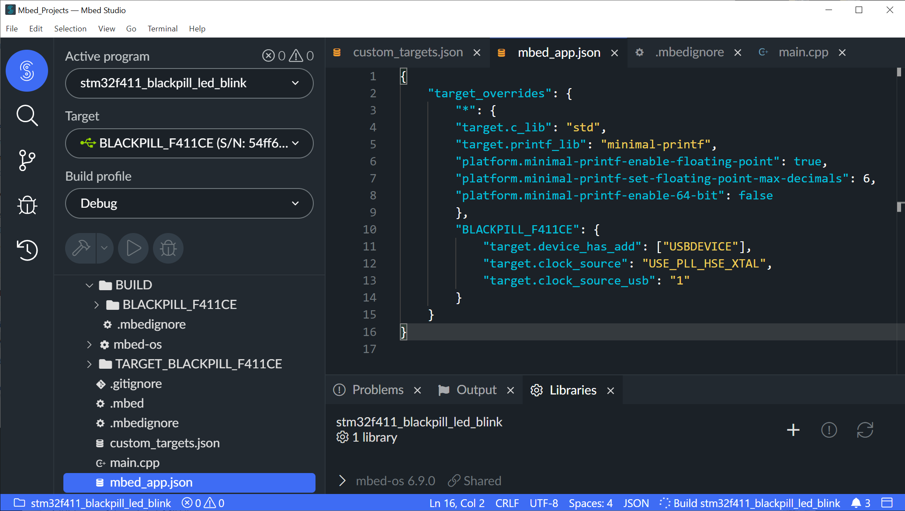

การใช้งานบอร์ด Black Pill ร่วมกับ Mbed OS และ Mbed Studio#
Keywords: Mbed OS, STM32 Programming, STM32F4
▷ บอร์ด Black Pill และ Mbed Custom Target#
บอร์ดไมโครคอนโทรลเลอร์ STM32F411CEU6 "Black Pill" ของ WeACT Studio ไม่จัดอยู่ในประเภทแพลตฟอร์มที่ใช้กับ Mbed ได้โดยตรง (→ ดูรายการ Mbed-enabled Platforms) แต่เราก็สามารถทำให้บอร์ดนี้สามารถใช้งานกับ Mbed OS ได้ โดยวิธีการสร้างสิ่งที่เรียกว่า "Mbed Custom Target" หรือ ดูตัวอย่าง Custom Targets สำหรับ Mbed ได้จาก → https://github.com/ARMmbed/stm32customtargets
ยกตัวอย่างบอร์ดที่ใช้ชิป STM32F4 Series เช่น ST NUCLEO-F401RE และ ST NUCLEO-F411RE ชิปทั้งสองรุ่นมีคุณสมบัติใกล้เคียงกัน ไฟล์ที่เกี่ยวข้องและใช้งานได้กับ Mbed OS Targets จะอยู่ในไดเรกทอรีของ Mbed OS ดังนี้
mbed-os/targets$ tree -L 1 -d
.
├── TARGET_ARM_FM
├── TARGET_ARM_SSG
├── TARGET_Ambiq_Micro
├── TARGET_Analog_Devices
├── TARGET_Cypress
├── TARGET_Freescale
├── TARGET_GigaDevice
├── TARGET_Maxim
├── TARGET_NORDIC
├── TARGET_NUVOTON
├── TARGET_NXP
├── TARGET_RENESAS
├── TARGET_STM
├── TARGET_Samsung
├── TARGET_Silicon_Labs
└── TARGET_TOSHIBA
และแสดงเฉพาะในส่วนที่เกี่ยวข้องกับ STM32F41xE
targets/
+--- TARGET_STM/
+--- TARGET_STM32F4/
+--- TARGET_STM32F401xE/
+-- TARGET_NUCLEO_F401RE
+--- TARGET_STM32F411xE/
+--- TARGET_NUCLEO_F411RE/
ลองมาดูตัวอย่างไฟล์ที่เกี่ยวข้องกับ Custom Targets เช่น
PinNames.h: การกำหนดชื่อขา I/Os และการใช้งาน เช่นPA_0/PB_6/PC_2/LED1/BUTTON1เป็นต้นPeripheralNames.h|PeripheralPins.c: การกำหนดจำนวนของวงจรภายใน (On-chip Peripherals) ในแต่ละประเภท เช่น UART / I2C / SPI / TIM / PWM / DAC และการอ้างอิงหมายเลขตามจำนวนที่มีsystem_clock.c: มีฟังก์ชันสำหรับเลือกใช้ Clock Source จำแนกได้หลายแบบ เช่น Low-speed / High-speed External (LSE / HSE), Low-speed / High-speed Internal (LSI / HSI) เป็นต้น การเปิดใช้งานวงจร PLL ภายในชิป และการตั้งค่าความถี่ให้ถูกต้องflash_data.h: มีการกำหนดขนาดของ Program Flash Memory พร้อมทั้งแอดเดรสเริ่มต้น และขนาดของ Flash Sectors ที่เกี่ยวข้อง
Zoltan Hudak
ซึ่งเป็นหนึ่งในกลุ่มผู้ใช้ Mbed OS ได้แชร์ไฟล์สำหรับ
"Custom Target for Blackpill STM32F411"
(ชื่อของ Target: BLACKPILL อัปเดทล่าสุด: 30-Oct-2021)
ให้ผู้ที่สนใจสามารถดาวน์โหลดไปใช้งานได้
เมื่อได้ดาวน์โหลดเป็นไฟล์ .zip มายังเครื่องของผู้ใช้ แล้วนำไปแตกไฟล์ (Unzip)
และนำสิ่งที่อยู่ภายในไปใส่ลงในไดเรกทอรีของโปรแกรม (Root directory of the project)
เมื่อเปิดใช้งาน Mbed Studio IDE
และให้ระบุชื่อ BLACKPILL สำหรับการเลือก Target
อีกตัวเลือกหนึ่งคือ ไฟล์สำหรับ Custom Targets ที่ได้มีการแชร์ไว้ใน Github โดยผู้ใช้ชื่อ "vznncv" สำหรับบอร์ด "WeAct Studio - Black Pill STM32F4x1" และบอร์ดอื่น เช่น
หากเปรียบเทียบบอร์ด Black Pill (STM32F411CEU6, 512KB Flash, 128KB SRAM) กับบอร์ด ST NUCLEO F411RE (STM32F411RET6, 512KB Flash, 128KB SRAM) จะพบว่า ทั้งสองกรณีใช้ชิปไมโครคอนโทรลเลอร์ใน STM32F4 Series เหมือนกัน มีขนาดหน่วยความจำเท่ากัน แต่มีความแตกต่างและต้องปรับเปลี่ยนในการใช้งาน เช่น
- บอร์ด NUCLEO ใช้สัญญาณความถี่ 8MHz Crystal จาก On-board ST-Link/v2 แต่บอร์ด Black Pill ใช้สัญญาณความถี่จาก 25MHz Osc. (HSE)
- บอร์ด NUCLEO-F411RE (LQFP64 package) มีจำนวนขามากกว่า Black Pill (UFQFPN48 package)
▷ การเขียนโปรแกรมด้วย Mbed Studio สำหรับบอร์ด Black Pill#
ขั้นตอนการดำเนินการมีดังนี้
- เปิดใช้งาน Mbed Studio
- สร้างไดเรกทอรีใหม่ และใช้ไดเรกทอรีดังกล่าวสำหรับ Workspace
- เปิด Workspace ใหม่ (File > Open Workspace..) โดยเลือกไดเรกทอรีที่ได้สร้างขึ้นมาใหม่
- สร้างโปรแกรม (โปรเจกต์) ใหม่ (New Program) ภายใน Workspace
- เลือก "empty Mbed OS program"
- ตั้งชื่อโปรแกรมใหม่
- ระบุที่อยู่หรือไดเรกทอรีสำหรับไลบรารี Mbed OS
- นำไฟล์และไดเรกทอรีย่อยสำหรับ Black Pill Target
มาใส่ในไดเรกทอรีของโปรแกรม ได้แก่
- ไฟล์
custom_targets.json - ไดเรกทอรี
TARGET_BLACKPILL/*
- ไฟล์
- เปิดไฟล์
main.cppที่ได้มีการสร้างขึ้นไว้แล้วในไดเรกทอรีของโปรเจกต์ และแก้ไขตามโค้ดตัวอย่าง - สร้างและเพิ่มไฟล์
mbed_app.jsonในไดเรกทอรีของโปรเจกต์ (ดูตัวอย่างข้างล่าง) - แก้ไขไฟล์
custom_targets.jsonในไดเรกทอรีของโปรเจกต์ (ดูตัวอย่างข้างล่าง) - ทำขั้นตอน Build เพื่อสร้างไฟล์ไบนารี .bin ซึ่งเป็นเอาต์พุตที่ได้สำหรับโปรแกรม
- เชื่อมต่อบอร์ด Black Pill กับคอมพิวเตอร์ของผู้ใช้ ผ่านทาง ST-Link/V2 USB Dongle
- ตั้งค่าสำหรับ Target > Manage Custom Targets เลือกอุปกรณ์ USB ที่มองเห็นสำหรับ ST-Link/V2
- เลือก
BLACKPILLเป็นชื่อสำหรับ Target Name และ Build Target - ในส่วนของ Deploy and debug target จะต้องเปลี่ยนจากเดิม "None (Use mass storage copy for deploy)" ให้เป็น "STM32F411E (Keil.STM32F4xx_DFP.x.x.x)" ตามรูปตัวอย่าง
- ในส่วนของ Debug flags จะมีการใส่ข้อความให้โดยอัตโนมัติ (และในบางกรณี อาจจำเป็นต้องกำหนดค่าความถี่ของ SWD ให้น้อยลง ไม่เกิน 1 MHz) แล้วกดปุ่ม Save All
- กดปุ่ม Run Program เพื่ออัปโหลดไฟล์ .bin ของโปรแกรมไปยังบอร์ดทดลอง แล้วสังเกตการเปลี่ยนแปลงสถานะของ LED
- กดปุ่ม Debug หากต้องการดีบักการทำงานของโปรแกรมโดยใช้บอร์ดทดลองที่เชื่อมต่ออยู่ในขณะนั้น
ข้อสังเกต: ผู้ใช้สามารถนำออกโปรเจกต์ (Export Project) จาก Mbed Studio ให้อยู่ในรูปของไฟล์สำหรับซอฟต์แวร์ Keil μVision หรือ เป็นไฟล์ .tgz ได้ โดยทำคำสั่งจากเมนู File > Export to
รูป: เมื่อเปิด Workspace ใหม่ใน Mbed Studio

รูป: ทำขั้นตอนสร้างโปรแกรมใหม่ (New Program)

รูป: เพิ่มไฟล์ custom_targets.json และไดเรกทอรีของTARGET_BLACKPILL ในโปรแกรม
ตัวอย่างไฟล์: custom_targets.json
{
"BLACKPILL": {
"inherits": [
"MCU_STM32F4"
],
"extra_labels_add": [
"STM32F411xE"
],
"macros_add": [
"STM32F411xE"
],
"config": {
"hse_value": {
"help": "Use 25MHz external crystal",
"value": "25000000",
"macro_name": "HSE_VALUE"
},
"clock_source_usb": {
"help": "Use 48 MHz clock for USB and 96 MHz for CPU",
"value": "0",
"macro_name": "CLOCK_SOURCE_USB"
}
},
"overrides": {
"clock_source": "USE_PLL_HSE_XTAL",
"lse_available": 1
},
"device_has_add": [
"USBDEVICE"
],
"bootloader_supported": true,
"detect_code": [
"0740"
],
"device_name": "MCU_STM32F411CE"
}
}
ข้อสังเกต: บอร์ด BlackPill รับสัญญาณ Clock จากวงจรสร้างสัญญาณความถี่ 25MHz จากภายนอก
ดังนั้นจึงมีการกำหนดค่า HSE_VALUE (High-Speed External Clock Source) ให้เท่ากับความถี่ดังกล่าว
และมีการเปิดใช้งานวงจรภายในที่เรียกว่า PLL เพื่อสร้างสัญญาณ Clock ที่มีความถี่สูงใหักับซีพียู
ถ้าไม่ใช้ USB จะได้ความถี่สำหรับการทำงานของซีพียูเท่ากับ 100MHz แต่ถ้าใช้เปิดใช้งาน USB จะได้ความถี่ 96MHz และความถี่สำหรับการทำงานของวงจร USB เท่ากับ 48MHz
ตัวอย่างไฟล์: mbed_app.json
{
"target_overrides": {
"*": {
"target.c_lib": "std",
"target.printf_lib": "minimal-printf",
"platform.minimal-printf-enable-floating-point": true,
"platform.minimal-printf-set-floating-point-max-decimals": 6
},
"BLACKPILL": {
"target.device_has_add": ["USBDEVICE"],
"target.clock_source": "USE_PLL_HSE_XTAL",
"target.clock_source_usb": "1"
}
}
}
โค้ดตัวอย่างสำหรับสาธิตการทำงานของบอร์ดต่อไปนี้ จะทำให้ LED บนบอร์ดกระพริบได้ (เปลี่ยนสถานะทุก 200 มิลลิวินาที) แต่ถ้ามีการกดปุ่ม KEY ค้างไว้ จะไม่มีการเปลี่ยนสถานะ
ตัวอย่างไฟล์: main.cpp
#include "mbed.h"
// use onboard LED (PC_13 pin)
DigitalOut led(LED1);
// use onboard button / KEY (PA_0 pin)
DigitalIn btn(USER_BUTTON, PullUp); // Internal PullUp must be enabled.
int main() {
while (true) {
if ( btn.read() != 0 ) { // is button not pressed ?
led = !led; // toggle LED
}
ThisThread::sleep_for( 200ms );
}
}

รูป: สร้างและเพิ่มไฟล์ mbed_app.json ตามตัวอย่าง

รูป: แก้ไขไฟล์ main.cpp ตามตัวอย่าง

รูป: ทำขั้นตอน Build

รูป: ตั้งค่าสำหรับ Custom Target เมื่อได้เชื่อมต่อบอร์ด Black Pill ผ่านทาง ST-Link/V2 USB Dongle
 รูป: กดปุ่ม Run Program เพื่ออัปโหลดโปรแกรมไปยังบอร์ดทดลอง
รูป: กดปุ่ม Run Program เพื่ออัปโหลดโปรแกรมไปยังบอร์ดทดลอง
 รูป: กดปุ่ม Debug และเข้าสู่ Debug Session
จะสังเกตเห็นได้ว่า มีการทำคำสั่งมาหยุดที่บรรทัดถัดไปในฟังก์ชัน
รูป: กดปุ่ม Debug และเข้าสู่ Debug Session
จะสังเกตเห็นได้ว่า มีการทำคำสั่งมาหยุดที่บรรทัดถัดไปในฟังก์ชัน main()
และมีตัวชี้ด้านข้างที่มีสีเหลืองส้ม (Marker)
 รูป: เมื่อรันโปรแกรมต่อ จะมาหยุดอยู่ตรงบรรทัดที่มีการกำหนดให้เป็น Breakpoint
รูป: เมื่อรันโปรแกรมต่อ จะมาหยุดอยู่ตรงบรรทัดที่มีการกำหนดให้เป็น Breakpoint
▷ ตัวอย่างการใช้ USBSerial Driver#
ชิป STM32F411CEU6 รองรับการใช้งาน Native USB และบอร์ด Black Pill มีคอนเนกเตอร์แบบ USB Type-C ดังนั้นเมื่อเสียบสาย USB กับคอมพิวเตอร์ ก็สามารถเขียนโปรแกรม ให้บอร์ดนี้ส่งข้อความผ่านทาง USB CDC / USBSerial ได้อย่างง่าย ซึ่งมีตัวอย่างดังนี้
#include "mbed.h"
#include "USBSerial.h"
DigitalOut led(LED1); // onboard LED
USBSerial usbSerial;
int main() {
for( int i=0; i < 10; i++ ) { // fast LED toggle
led = !led;
ThisThread::sleep_for( 50ms );
}
usbSerial.printf( "MCU Flash Size: %u Kbytes\r\n", MBED_ROM_SIZE/1024 );
usbSerial.printf( "HSE_VALUE: %u\r\n", HSE_VALUE );
usbSerial.printf( "CLOCK_SOURCE_USB: %d\r\n", CLOCK_SOURCE_USB );
usbSerial.printf( "CPU Clock: %lu MHz\r\n", SystemCoreClock/1000000UL );
usbSerial.printf( "Mbed OS STM32F411CEU6 BlackPill Demo..\r\n" );
while (true) {
led = !led; // toggle LED
usbSerial.printf( "Blink: %d\r\n", led.read() );
ThisThread::sleep_for( 500ms );
}
}
หากนำโค้ดตัวอย่างนี้ไปทดลอง เมื่ออัปโหลดไฟล์ .bin ไปยังบอร์ดไมโครคอนโทรลเลอร์แล้ว จะมองเห็น Serial COM port (หากทดลองกับระบบปฏิบัติการ Windows) และถ้าใช้โปรแกรม เช่น Tera Term เปิดพอร์ตดังกล่าว ก็จะเห็นมีข้อความถูกส่งออกมา

รูป: ตัวอย่างข้อความเอาต์พุต

รูป: บอร์ด Black Pill และการเชื่อมต่อกับพอร์ต USB ของคอมพิวเตอร์
▷ กล่าวสรุป#
เนื้อหาในเอกสารนี้ ได้กล่าวถึงขั้นตอนการนำบอร์ดไมโครคอนโทรลเลอร์ Black Pill ซึ่งมีราคาไม่แพง และใช้ชิป STM32F411CEU6 เป็นตัวประมวลผล มาใช้งานร่วมกับอุปกรณ์ ST-Link/V2 USB Dongle (clone) และใช้ซอฟต์แวร์ Mbed Studio IDE สำหรับฝึกเขียนโปรแกรม STM32 โดยได้ลองใช้ Mbed OS (v6.15.1)
This work is licensed under a Creative Commons Attribution-ShareAlike 4.0 International License.
Created: 2021-12-05 | Last Updated: 2021-12-31